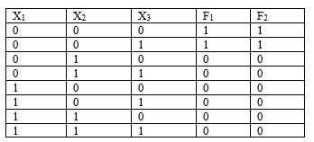

Практическая работа №4
Тема: сравнение логических функций на тождественность.
Дидактическая цель: закрепить теоретические знания по основам математической логики и выработать практические навыки по сравнению логических функций на тождественность с помощью таблиц истинности.
Литература:
1. Еловенко Н.А. Дискретная математика. Учебное пособие. – Волгоград. ГОУ СПО ВЭТК. 2008. Главы 2, 3.
Ход занятия:
1. Проверка теоретической подготовки студентов (переход от одного вида представления ЛФ к другому, принципы тождественности).
2. Инструктаж преподавателя о ходе выполнения работы.
3. Выполнение работы с использованием методических указаний по вариантам.
4. Защита практической работы с ответами на контрольные вопросы (устно).
5. Подведение итогов и оценка работы каждого студента.
Порядок выполнения работы:
1. Ознакомиться с примером решения.
2. Решить задания, соблюдая порядок оформления примера и оформить отчет (номер, тема и цель практической работы, решение задания по варианту, вывод).
3. Подготовить ответы на контрольные вопросы, сделать вывод и предъявить отчет преподавателю.
Пример решения задания:
1. Сравнить две логические функции на тождественность:
F1= X1 & X 2 & X3 X1 & X2 & X3
F2= X1& X 2
2. Для каждой из функций составим таблицу истинности

3. Если таблицы истинности совпадают, то функции тождественны, а если не совпадают, то не тождественны.
4. Делаем вывод о тождественности функций. В данном примере таблицы истинности совпадают, значит, функции тождественны.
Задание: Сравнить две логические функции на тождественность:
1 вариант
1) X1 & X 2 & X3 X1 & X2 & X3 X1 & X 2 & X3 X1 и
X1 & X 2 & X3 X1
2) X1 & X 2 & X3 X1 & X2 & X3 X1 & X 2 & X3 X1 & X 2 & X3 X3 и
X2 & X3 X1& X2
2 вариант
1) X1 & X 2 & X3 X1 & X2 & X3 X1 & X 2 & X3 X1 & X 2 & X3 X3 и
X3 X1
2) X1 & X 2 & X3 X1 & X2 & X3 X1 & X 2 & X3 X1 & X 2 & X3 и
X1 & X 2 & X3 X1 & X 2 X1
3 вариант
1) X1 & X 2 & X3 X1 & X2 & X3 X1 & X 2 & X3 X1 & X 2 & X3 и
X2 & X3 X1& X2
2) X1 & X 2 & X3 X1 & X2 & X3 X1 & X 2 & X3 X1 и
X3 X2 & X 3 X1& X 3
Контрольные вопросы: Описать процесс заполнения таблицы истинности, рассказать правило сравнения двух функций на тождественность.